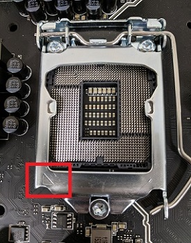
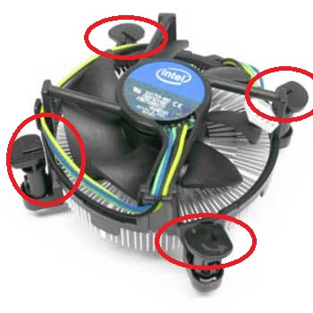
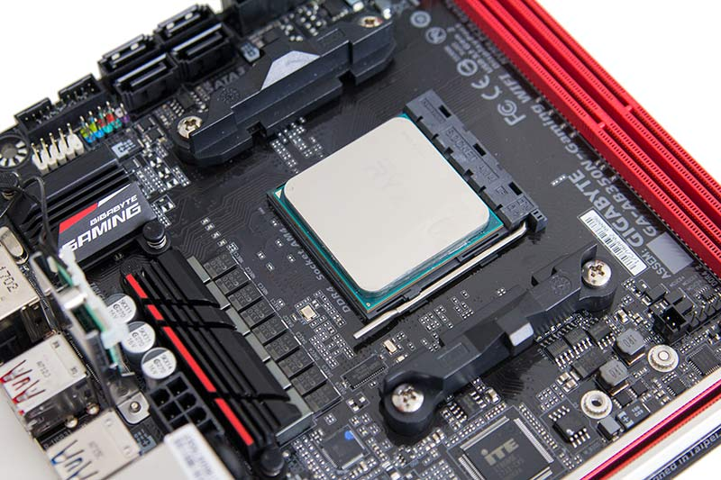
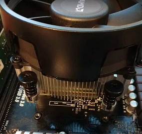

Installing the CPU and Cooler
Before any part is actually put in the case we want to assemble a majority of the motherboard outside of the case to make assembly easier. Unpackage your motherboard and set it on your workspace.Do not remove your CPU just yet, it is very sensitive so we only want to handle it when necessary. Explore the buttons below for mounting an Intel CPU vs an AMD CPU.
For Intel CPUs the motherboard socket should have a metal tray around the CPU socket and a small metal lever.Press down on that lever and pull it gently to the side to open the CPU tray. Now remove the CPU from it's packaging. Make sure to hold it by the edges as touching the pins on the bottom or the top will damage it.Now locate an arrow on one of the corners of the CPU, there will be a corresponding arrow on the CPU socket indicating how to align the CPU. Additionally, Intel CPU's should also have two notches that line up with the CPU socket. Once you have opened the socket and orientated the CPU, drop it into the socket: it should fit effortlessly. Now close the CPU tray and then push the lever back down to lock the CPU tray. This part might require a little more pressure. Now your CPU is installed and we are ready to install the cooler.
Most Intel CPUs come with a stock cooler that will have pre applied thermal paste. If you are using a stock cooler not included with your CPU, you may have to apply your own thermal paste if not pre applied on the cooler. Intel stock coolers should have 4 plastic pins on each corner with a notch at the top of the pins; rotate the notch so it points towards the fan then position the cooler on top of the CPU. The 4 pins should line up with 4 holes in the motherboard; once lined up, press down on the pins until you hear a click.
Finally, make sure the cable to power the fan is not in the way of the fan and plug it into your motherboard's CPU fan header. This header is different for all motherboards so refer to the manufacturers guide for the location of this and any header in the rest of this guide.
For AMD CPUs the motherboard socket should have a small metal lever around the CPU socket. Press down on that lever and pull it gently to the side to open the CPU tray. Now remove the CPU from it's packaging. Make sure to hold it by the edges as touching the pins on the bottom or the top will damage it.Now locate an arrow on one of the corners of the CPU, there will be a corresponding arrow on the CPU socket indicating how to align the CPU. Once you have opened the socket and orientated the CPU, drop it into the socket: it should fit effortlessly..Now close the CPU tray and then push the lever back down to close the CPU tray. This part might require a little more pressure. Now your CPU is installed and we are ready to install the cooler.
Most AMD CPUs come with a stock cooler that will have pre applied thermal paste. If you are using a stock cooler not included with your CPU, you may have to apply your own thermal paste if not pre-applied on the cooler. Now depending on the cooler it may have retention clips or have 4 spring screws which have separate installation processes.
Installing a cooler without retention clips
This installation process is fairly simple. There are only two orientations AMD coolers can be installed in as the 4 screws form a rectangle. Find one of these orientations and screw the cooler until the screws won't turn anymore.
Installing a cooler with retention clips
This installation process does not involve using any screws. It is important to note that not all AMD motherboards have a socket for these retention clips so make sure your parts are compatible! First make sure that the cam lever on the cooler is unlocked. Then line up the retention clips with the retention hooks on the motherboard and one at a time push the retention clip until both clips are hooked. Once the cooler is in place, lock the cam lever and the cooler will be installed.
From left to right: The retention clip on the retention hook, the cam lever unlocked, the cam lever locked
Finally, make sure the cable to power the fan is not in the way of the fan and plug it into your motherboard's CPU fan header. If your cooler has RGB then you will also need to plug an RGB cable into the corresponding header on the motherboard.
Click the next button to move on to the next step: Installing RAM